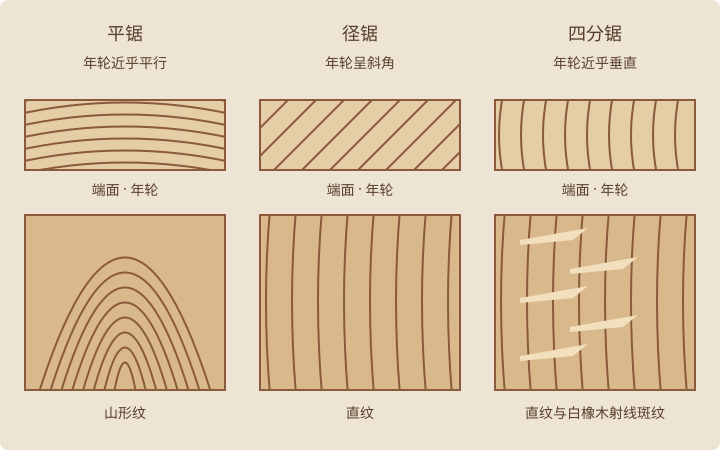

从一棵树上锯下的木板，纹理可能大不相同。关键在于切面与年轮相交的角度。

平锯：流动的山形纹
年轮与板面大致平行，板面常呈现熟悉的山形纹。平锯出材效率较高，也容易取得较宽的板材；在湿度变化时，板宽的伸缩通常较明显。
径锯：整齐的直纹
年轮与板面呈斜角，板面多见较均匀的直纹。橡木上通常较少出现四分锯常见的宽大木射线斑纹，适合偏好简洁连续线条的设计。
四分锯：直纹与木射线
年轮与板面角度较大，纹理趋于笔直。白橡木的木射线可能显出醒目的斑纹。板宽受湿度影响通常较小，但木材仍会伸缩，并非完全不动。
选择适合作品的纹理
桌面可以展现流动的山形纹，框架也可以采用更克制的直纹。木种、可用板宽、出材率与损耗都会影响成本，没有一种锯切方式处处最好。